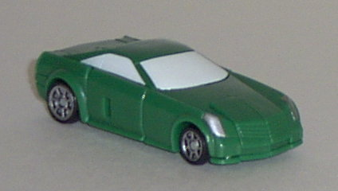
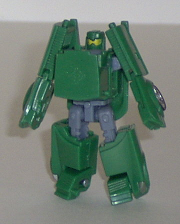
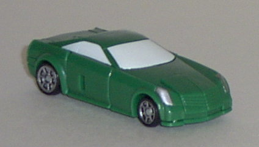
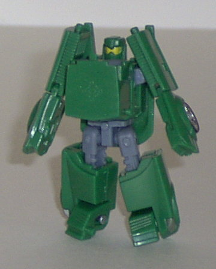
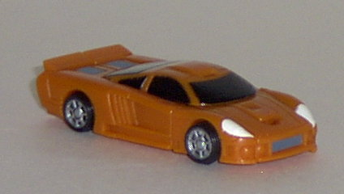
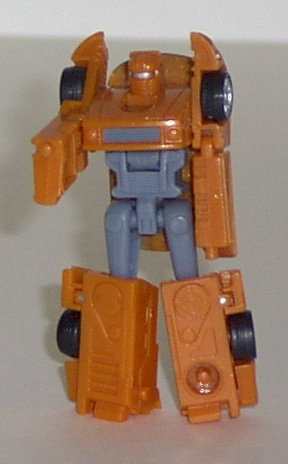
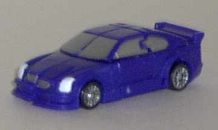
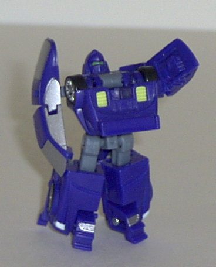

Backtrack
Backtrack
 
Difficulty of Transformation : Medium
Color Scheme : Green, gray, white, and some silver, black, and bright yellow
Individual Rating : 7.4
Street
Speed Team
Allegiance
: Minicon
Size
: Mini-Con (3-pack)
Team Gimmick
: Super "posability"
(at least, that's what it says on the package)
Overall Rating
: 7.4
Backtrack


Difficulty of Transformation
: Medium
Color Scheme
: Green, gray, white,
and some silver, black, and bright yellow
Individual Rating
: 7.4
Vehicle mode is a sportscar.
This mode is really nice, with no extras whatsoever. The mold detailing
is a bit sparse on the top, but considering how small this toy is and how
smooth the top of a sportscar is supposed to be, I can forgive this. Plus,
the front and back of the car have exquisite detailing- Backtrack even
has little gas pipes molded under the rear fender! A bit more paint detailing
on the rear fender would have been appreciated, however. Other than that,
stupendous. The Minicon sigil is on the rear top of the car, and the Minicon
port is on the bottom, at the very rear of the car.
Before I get to the
robot mode, something needs to be said about Backtrack's transformation:
this guy is waaay too fragile when it comes to his transformation. You
have to manipulate so many small parts, and when you have ball joints and
little hinge joints involved, this is not a good thing. I've rarely transformed
Backtrack without his arms popping off or something, and it gets pretty
annoying after a while.
Robot mode, once you
get to it, is pretty nice. Backtrack looks almost... cute, but in a good
way. It's hard to explain exactly why, but the proportions are very pleasing
in this mode- even the chest, despite it sticking out so much. The fists
are merely molded onto the ends of the arms, though, and the elbows snap
off too easily. As for articulation, Backtrack can move at his elbows,
shoulders, waist, feet, and hips. He definitely needs some more paint detailing
on his front side in this mode, however...
Backtrack is a very
nice Minicon- but he's very fragile when it comes to his transformation
and his robot arms. As such, I'd only recommend him for older kids and
collectors, since little kids are bound to get frustrated over his many
small pieces during transformation.
Oval


Difficulty of Transformation
: Very
Easy
Color Scheme
: Gray, black, tannish
orange, and some white and silver
Individual Rating
: 8.2
Vehicle mode is a sportscar.
Just like Backtrack's, this mode is next to perfect. In fact, the only
thing I think is missing is some paint detailing on the rear fender (which
already has excellent mold detailing, anyway). The paint and mold detailing
on the rest of the figure are good for such a small one. The Minicon port
is on the bottom rear of the car, to the left of center.
Robot mode is also top-notch,
although I think the legs could just some more paint detailing. The head
especially looks freakin' awesome with the visor and grilled mouthplate,
and the proportions are pretty much perfect. However, just like on Backtrack,
the elbow joints snap off too easily, and the hands are just molded on
the insides of the arm pieces (although they're much more obvious on this
toy than on Backtrack). The peg that holds his waist and chest together
also doesn't stay in its slot as well as I'd like. Oval has shoulder, elbow,
and hip articulation- certainly not spectacular, but decent. The Minicon
sigil is on the left knee.
Oval is an awesome Minicon,
one of my favorite Minicons of all. He has a couple small problems in robot
mode, such as the elbow joints that easily snap off, but these are easily
overlooked.
Spiral


Difficulty of Transformation
: Easy
Color Scheme
: Dark blue, silver,
gray, and some black, white, bright yellow, and light military green
Individual Rating
: 6.7
Vehicle mode is a sportscar.
Although this mode is still nice, it's definitely weakest of the Street
Speed Team's alt modes. There are many obvious hinges and cracks that run
throughout this mode, kinda detracting from the smooth look a bit. The
actual proportions of the car are nice, though. The mold detailing is great
on the sides, but noticeably missing from the top, just like Backtrack.
The paint detailing is nice, although again noticeably missing from the
rear fender. The Minicon symbol is on the bottom center of the car, and
the Minicon port is on the bottom center, at the very rear.
In robot mode, Spiral
suffers from some massive leg kibble- his legs are twice as wide as they
should be, because of the car doors hanging off of the back of them. Other
than that, this mode is pretty nice, and similar in design to Backtrack's.
The chest is a bit too wide, though, even though it sticks out just as
much as Backtrack's. The hands, again, are just molded onto the arm pieces,
but I do like the "rounded shield-guard" look of the arms, and the elbows
don't snap off nearly as easily as they do on Backtrack and Oval. The face
also looks pretty neat, with the green visor and the air vents on the side.
Spiral is also the most-articulated of the Street Speed Team- he has shoulder,
elbow, waist, knee, feet, and hip articulation- very nice, indeed.
Spiral's vehicle mode
looks rather haphazard, but his robot mode is pretty nice, minus the knees,
and very articulated without being fragile like Backtrack.
The Street Speed's Team is officially "super poseable", but with the exception of Spiral, they're really not- they're just more complex and made up of more parts than the other Minicons. The Street Speed Team remain my favorite team of Minicons to date, though (6/03), and are definitely worth picking up if you're not a little kid (since they have many small parts).
Review by Beastbot